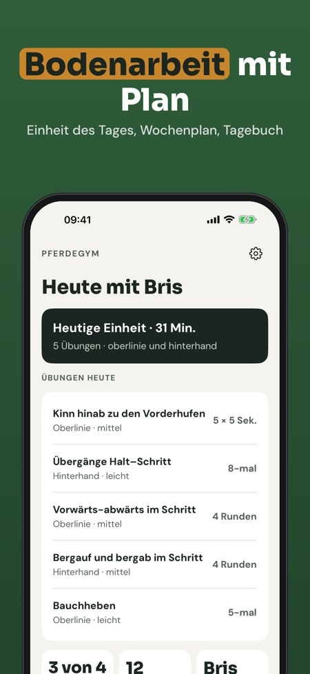
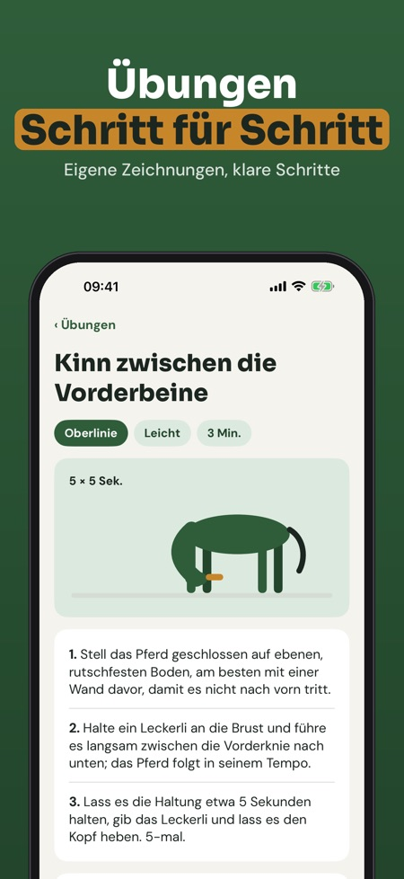
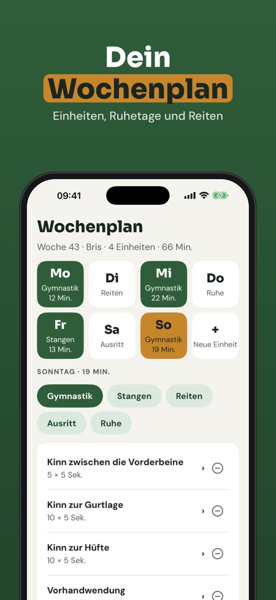

Dehnen, Kraft und Wochenplan. Übungen vom Boden für dein Pferd: Dehnen, Kraft und Balance in kurzen Einheiten mit Timer, Wochenplan und Tagebuch – auch ohne Internet im Stall.



Pferdegym ist das Trainingsprogramm für alle, die ihr Pferd vom Boden aus arbeiten: Übungsbibliothek, Wochenplan, Timer und Tagebuch an einem Ort.
Die Einheit des Tages mit Timer, 12 Übungen und das Tagebuch kannst du ohne Kauf nutzen. Die Vollversion ist ein Einmalkauf und schaltet die ganze Bibliothek, Wochenpläne, Erinnerungen, Fortschritt und mehrere Pferde frei. Kein Abo.
Pferdegym gibt keine tierärztlichen Ratschläge und ersetzt weder Tierarzt noch Physiotherapeut. Ist dein Pferd verletzt, lahm oder in Behandlung, frag vor dem Start deinen Tierarzt.